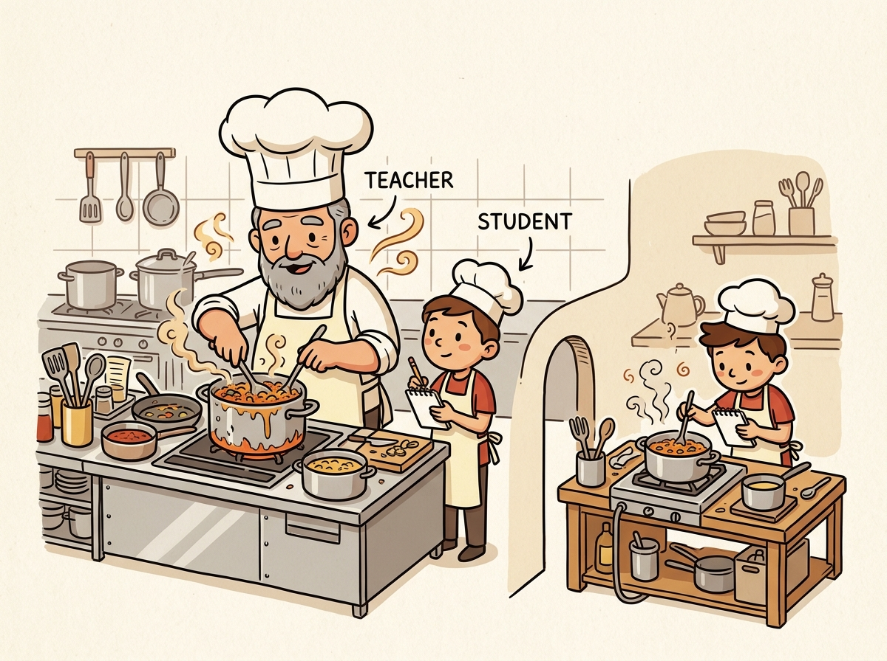

The goal is not to build a smaller model, but to build a smaller model that remembers what the bigger one learned.
A Knowledge-Distilling AI Agent

Prerequisites
This section builds on fine-tuning from Section 13.1: When and Why to Fine-Tune and pre-training covered in Section 6.1: The Landmark Models.
Knowledge distillation is the art of making small models behave like large ones. A 70B-parameter teacher model contains vast knowledge but is expensive to serve. By training a smaller student model to mimic the teacher's output distribution (not just its final answers), the student can inherit much of the teacher's capability at a fraction of the inference cost. This technique has produced some of the most remarkable results in the LLM space: Microsoft's Phi-3 models distilled from GPT-4 demonstrate that a 3.8B model can match models 10x its size. DeepSeek distilled its R1 reasoning model into compact variants that retain strong chain-of-thought abilities. The pre-training objectives from Section 6.2 explain how these teacher models acquired their knowledge in the first place.
1. Classical Distillation Framework
1.1 The Teacher-Student Paradigm
Knowledge distillation (Hinton et al., 2015) trains a smaller "student" model to match the output probability distribution of a larger "teacher" model, rather than training the student solely on hard ground-truth labels. Recall from Module 06 that a language model produces logits (raw, unnormalized scores for each token in the vocabulary) which are then converted to probabilities via the softmax function. The key insight of distillation is that the teacher's probability distribution over all possible tokens contains far richer information than a single correct answer. When the teacher assigns 0.6 probability to "happy," 0.2 to "glad," and 0.1 to "joyful," these "soft" probabilities encode semantic relationships that hard labels cannot convey. Figure 15.1.1 shows this teacher-student training setup.
1.2 Temperature and Soft Targets
The temperature parameter T controls how "soft" the teacher's output distribution becomes. At T=1 (normal softmax), the teacher's distribution is peaked on the most likely token. As T increases, the distribution becomes smoother, revealing the relative probabilities of less likely tokens. This "dark knowledge" in the non-top predictions encodes the teacher's understanding of semantic similarity and uncertainty.
Think of knowledge distillation as a master chef teaching an apprentice. The master (teacher model) does not just tell the apprentice the correct dish; they share the probability distribution over all possible dishes ('this is 70% likely a risotto, 20% a pilaf, 10% a paella'). These soft labels carry richer information than hard labels ('this is a risotto') because they reveal the master's uncertainty and the relationships between options. The apprentice (student model) learns not just the answers but the teacher's reasoning patterns, often achieving surprisingly close performance at a fraction of the size.
Knowledge distillation was first proposed by Hinton, Vinyals, and Dean in 2015. The core insight (that a teacher model's soft probability distribution carries more information than hard labels) is still the foundation of every distillation method used today.
The softmax with temperature is computed as:
pi = exp(zi / T) / Σj exp(zj / T)
where zi are the logits (pre-softmax values). Common temperature values range from 1.5 to 4.0. To see why temperature matters, consider logits [5.0, 2.0, 0.5] for three tokens. At T=1, softmax produces [0.92, 0.05, 0.01], a sharply peaked distribution that barely distinguishes the non-top tokens. At T=2, the distribution softens to [0.72, 0.18, 0.10], revealing that the second token is more plausible than the third. At T=4, we get [0.55, 0.26, 0.19], exposing even more of the teacher's uncertainty. Higher temperatures expose more of the teacher's knowledge but also introduce more noise. The distillation loss is scaled by T² to compensate for the gradient magnitude reduction caused by softening. Code Fragment 1 shows this approach in practice.
# Compute the KL-divergence distillation loss between teacher and student
# Soft targets from the teacher transfer more information than hard labels
import torch
import torch.nn as nn
import torch.nn.functional as F
class DistillationLoss(nn.Module):
"""Combined distillation and task loss for LLM training."""
def __init__(self, temperature=2.0, alpha=0.5):
super().__init__()
self.temperature = temperature
self.alpha = alpha # Weight for distillation vs hard label loss
self.kl_loss = nn.KLDivLoss(reduction="batchmean")
def forward(self, student_logits, teacher_logits, labels):
# Soft targets: soften both distributions with temperature
T = self.temperature
student_soft = F.log_softmax(student_logits / T, dim=-1)
teacher_soft = F.softmax(teacher_logits / T, dim=-1)
# KL divergence loss (scaled by T^2)
distill_loss = self.kl_loss(student_soft, teacher_soft) * (T ** 2)
# Hard label cross-entropy loss
hard_loss = F.cross_entropy(
student_logits.view(-1, student_logits.size(-1)),
labels.view(-1),
ignore_index=-100,
)
# Combined loss
return self.alpha * distill_loss + (1 - self.alpha) * hard_lossThe temperature parameter is critical. At T=1, the teacher's distribution is so peaked that it provides little more information than a hard label. At T=4, the distribution is smooth enough to reveal semantic relationships between tokens. However, too high a temperature washes out the signal entirely. Start with T=2.0 and tune based on validation performance. The T² scaling factor in the loss ensures consistent gradient magnitudes regardless of temperature.
Distilling GPT-4 into a Domain-Specific 1.5B Model
Who: ML platform team at an e-commerce company
Situation: Product search used GPT-4 API calls to rewrite user queries into structured filters (brand, size, color, price range), processing 2 million queries per day.
Problem: GPT-4 API costs exceeded $18,000 per month, and latency averaged 1.2 seconds per query, degrading the search experience.
Dilemma: A smaller fine-tuned model could reduce cost and latency, but the team lacked labeled training data for the structured query format.
Decision: They used black-box distillation: GPT-4 generated 200,000 query-to-filter pairs from production logs, then they fine-tuned Qwen 1.5B on that synthetic dataset.
How: The student model was trained with standard cross-entropy on GPT-4 outputs (hard labels only, since logits were unavailable). Temperature-scaled soft labels were approximated by asking GPT-4 to output top-5 alternative parsings with confidence scores.
Result: The distilled 1.5B model matched GPT-4 accuracy on 94% of queries, reduced latency to 45ms (26x faster), and cut monthly costs to $400 for self-hosted inference.
Lesson: Black-box distillation from API models is a practical path to production; generating diverse synthetic training data compensates for the lack of soft probability distributions.
2. White-Box vs. Black-Box Distillation
The distillation approach depends on what access you have to the teacher model. White-box distillation requires access to the teacher's internal logits; black-box distillation works only with the teacher's text outputs.
| Aspect | White-Box Distillation | Black-Box Distillation |
|---|---|---|
| Teacher access | Full model weights and logits | API outputs (text only) |
| Loss signal | KL (Kullback-Leibler) divergence on full distribution | Cross-entropy on generated text |
| Information richness | Very high (full probability distribution) | Lower (only top-1 output) |
| Typical teachers | Open-weight models (Llama, Mistral) | API models (GPT-4, Claude) |
| Quality ceiling | Higher (more teacher knowledge transferred) | Lower (limited to surface behavior) |
| Scalability | Limited by GPU memory for teacher | Limited by API cost and rate limits |
Code Fragment 2 demonstrates this approach.
2.1 White-Box Distillation
# Compute the KL-divergence distillation loss between teacher and student
# Soft targets from the teacher transfer more information than hard labels
import torch
from transformers import AutoModelForCausalLM, AutoTokenizer
from torch.utils.data import DataLoader
def white_box_distillation(
teacher_model_id: str,
student_model_id: str,
train_dataset,
temperature: float = 2.0,
alpha: float = 0.5,
epochs: int = 3,
lr: float = 2e-5,
):
"""Train student to match teacher logit distribution."""
# Load teacher (frozen, in eval mode)
teacher = AutoModelForCausalLM.from_pretrained(
teacher_model_id, torch_dtype=torch.bfloat16, device_map="auto"
)
teacher.eval()
for param in teacher.parameters():
param.requires_grad = False
# Load student (trainable)
student = AutoModelForCausalLM.from_pretrained(
student_model_id, torch_dtype=torch.bfloat16, device_map="auto"
)
loss_fn = DistillationLoss(temperature=temperature, alpha=alpha)
optimizer = torch.optim.AdamW(student.parameters(), lr=lr)
dataloader = DataLoader(train_dataset, batch_size=4, shuffle=True)
for epoch in range(epochs):
student.train()
total_loss = 0
for batch in dataloader:
input_ids = batch["input_ids"].to(student.device)
labels = batch["labels"].to(student.device)
# Get teacher logits (no gradient)
with torch.no_grad():
teacher_out = teacher(input_ids=input_ids)
teacher_logits = teacher_out.logits
# Get student logits
student_out = student(input_ids=input_ids)
student_logits = student_out.logits
# Compute combined loss
loss = loss_fn(student_logits, teacher_logits, labels)
loss.backward()
optimizer.step()
optimizer.zero_grad()
total_loss += loss.item()
print(f"Epoch {epoch+1}: avg_loss = {total_loss/len(dataloader):.4f}")
return student2.2 Black-Box Distillation
When the teacher is an API model (GPT-4, Claude, Gemini), you cannot access logits. Instead, you generate a large dataset of high-quality (input, output) pairs from the teacher, then fine-tune the student on these pairs using standard supervised training. The quality of the distilled student depends heavily on the diversity and quality of the generated training data. Code Fragment 3 shows this in practice.
# Generate teacher labels asynchronously for large-scale distillation
# Async batching maximizes throughput when labeling with an API-based teacher
import asyncio
from openai import AsyncOpenAI
import json
client = AsyncOpenAI()
async def generate_distillation_data(
prompts: list[str],
teacher_model: str = "gpt-4o",
system_prompt: str = "You are a helpful assistant.",
max_concurrent: int = 10,
) -> list[dict]:
"""Generate training data from API teacher for black-box distillation."""
semaphore = asyncio.Semaphore(max_concurrent)
results = []
async def call_teacher(prompt):
async with semaphore:
response = await client.chat.completions.create(
model=teacher_model,
messages=[
{"role": "system", "content": system_prompt},
{"role": "user", "content": prompt},
],
temperature=0.7,
max_tokens=2048,
)
return {
"instruction": prompt,
"response": response.choices[0].message.content,
"teacher": teacher_model,
}
tasks = [call_teacher(p) for p in prompts]
results = await asyncio.gather(*tasks, return_exceptions=True)
# Filter out errors
valid = [r for r in results if isinstance(r, dict)]
print(f"Generated {len(valid)}/{len(prompts)} training examples")
return valid
# Generate dataset
# training_data = asyncio.run(generate_distillation_data(prompts))
# Then fine-tune student model on this data using standard SFTBlack-box distillation from proprietary API models raises important licensing considerations. Most API providers (OpenAI, Anthropic, Google) have terms of service that restrict using their outputs to train competing models. Always review the provider's usage policy before conducting distillation. Open-weight models (Llama, Mistral, Qwen) generally allow distillation, but check their specific licenses. The Llama 3 license, for example, allows derivative works but has specific restrictions for very large deployments.
3. Case Studies in LLM Distillation
3.1 Orca: Learning from Complex Explanations
Microsoft's Orca (2023) demonstrated that small models can dramatically improve by learning not just the teacher's answers but its reasoning process. Orca trained a 13B student on millions of examples from GPT-4 that included detailed chain-of-thought explanations, step-by-step reasoning, and self-correction. The key innovations were: using system prompts to elicit rich explanations from the teacher, curating diverse and challenging prompts, and training the student on the full reasoning trace rather than just the final answer.
3.2 Phi Series: Textbook-Quality Data
Microsoft's Phi models (Phi-1, Phi-1.5, Phi-2, Phi-3) showed that data quality matters more than model size. Rather than distilling on conversational data, the Phi team used GPT-4 to generate "textbook-quality" synthetic training data: carefully structured explanations, worked examples, and exercises across diverse topics. Phi-3 (3.8B parameters) achieves performance competitive with much larger models on reasoning benchmarks, demonstrating that a small model trained on exceptional data can outperform a larger model trained on mediocre data.
3.3 Distilled DeepSeek-R1
DeepSeek distilled their large R1 reasoning model (671B MoE) into a family of smaller dense models (1.5B, 7B, 8B, 14B, 32B, 70B). The distillation process used 800K samples of the R1 teacher's chain-of-thought reasoning traces. The distilled models retain strong mathematical and coding reasoning abilities, with the 32B distilled variant outperforming many larger models on math benchmarks. This demonstrates that reasoning capabilities, which were previously thought to require enormous scale, can be effectively compressed through distillation. Figure 15.1.2 summarizes the key principles shared by successful distillation projects.
The single most impactful lesson from distillation research is: distill the reasoning process, not just the answer. When a teacher model generates chain-of-thought explanations, step-by-step solutions, and self-corrections, the student learns much more effectively than from answer-only training data. This is why models like Orca and distilled DeepSeek-R1 dramatically outperform naive distillation approaches that only collect the teacher's final outputs.
4. Small-but-Capable Models
Distillation has enabled a new class of small models that achieve remarkable performance relative to their size. These models demonstrate that the right combination of architecture, training data, and distillation can produce efficient models for deployment on edge devices, mobile platforms, or high-throughput serving scenarios.
| Model Family | Sizes | Key Technique | Notable Capability |
|---|---|---|---|
| Phi (Microsoft) | 1.3B, 2.7B, 3.8B, 14B | Textbook-quality synthetic data | Strong reasoning for size |
| Gemma (Google) | 2B, 7B, 9B, 27B | Distilled from Gemini | Multilingual, coding |
| SmolLM (HF) | 135M, 360M, 1.7B | Curated web + synthetic data | Ultra-small deployment |
| Qwen2.5 (Alibaba) | 0.5B, 1.5B, 3B, 7B+ | Multi-stage distillation | Math, code, multilingual |
| Llama 3.2 (Meta) | 1B, 3B | Pruning + distillation | On-device, mobile |
5. Practical Distillation Pipeline
Here is a complete pipeline that combines data generation from an API teacher with student training, demonstrating the end-to-end black-box distillation workflow. Code Fragment 4 shows this approach in practice.
# Load and prepare the distillation dataset with teacher-generated labels
# Each example pairs an input with the teacher model's soft predictions
from datasets import Dataset
from transformers import AutoModelForCausalLM, AutoTokenizer
from trl import SFTTrainer, SFTConfig
from peft import LoraConfig
import json
# Step 1: Prepare distillation dataset
# (Assume we have generated data from teacher API)
distillation_data = [
{
"messages": [
{"role": "user", "content": "Explain gradient descent."},
{"role": "assistant", "content": "Gradient descent is an optimization..."},
]
},
# ... thousands more examples
]
dataset = Dataset.from_list(distillation_data)
# Step 2: Configure student with LoRA (parameter-efficient)
student_id = "meta-llama/Llama-3.2-3B-Instruct"
tokenizer = AutoTokenizer.from_pretrained(student_id)
lora_config = LoraConfig(
r=32, # Higher rank for distillation
lora_alpha=64,
target_modules="all-linear",
task_type="CAUSAL_LM",
)
# Step 3: Train student on teacher-generated data
sft_config = SFTConfig(
output_dir="./distilled-student",
num_train_epochs=3,
per_device_train_batch_size=4,
gradient_accumulation_steps=4,
learning_rate=2e-4,
bf16=True,
max_seq_length=4096,
logging_steps=10,
save_strategy="epoch",
)
trainer = SFTTrainer(
model=student_id,
args=sft_config,
train_dataset=dataset,
peft_config=lora_config,
)
trainer.train()
print("Distillation complete. Evaluate student against teacher.")For distillation, use a higher LoRA rank (32-64) than you would for standard fine-tuning. The student needs more capacity to absorb the teacher's knowledge. Also consider training for more epochs (3-5) with a larger and more diverse dataset. Distillation benefits from data scale more than standard fine-tuning because each example conveys information about the teacher's behavior across many dimensions.
6. Distillation Licensing and Usage Policies
Before building a distillation pipeline, you must understand the legal constraints imposed by model providers. Most major LLM providers restrict or prohibit using their model outputs to train competing models. Violating these terms can result in service termination, legal liability, or both. The landscape varies significantly across providers.
6.1 Provider Policies (as of 2026)
| Provider | Output Usage for Training | Key Restriction |
|---|---|---|
| OpenAI | Prohibited for competing models | You may not use outputs to "develop any artificial intelligence models that compete with our Products and Services." Fine-tuning through OpenAI's own API is permitted. |
| Anthropic | Restricted | Usage policy prohibits using outputs to train models that compete with Anthropic's services. Research and internal use cases should be reviewed against current terms. |
| Google (Gemini) | Restricted | Terms of Service prohibit using Gemini outputs to develop "competing generative AI products." Google Cloud enterprise agreements may include different terms. |
| Meta (Llama) | Permitted with conditions | The Llama open license permits distillation. However, models with over 700 million monthly active users must request a separate license. |
| Mistral | Permissive | Apache 2.0 licensed models have no output restrictions. Commercial models accessed through API may have separate terms. |
| DeepSeek | Permissive | MIT license places no restrictions on output usage for training. |
The practical implication is clear: if you plan to distill knowledge from a proprietary API into your own model, verify that the provider's terms permit it. For many production use cases, starting with an open-weight teacher (Llama, Mistral, DeepSeek) avoids licensing uncertainty entirely. When using a proprietary API, the safest approach is to use the provider's own fine-tuning service rather than extracting outputs for external training.
Licensing terms change frequently. Always check the current Terms of Service before starting a distillation project. A policy that was permissive six months ago may have been revised. Enterprise agreements sometimes override standard terms, so consult your legal team if the project involves proprietary API outputs.
7. Speculative Distillation
Speculative decoding uses a small "draft" model to propose multiple tokens at once, which a larger model then verifies in a single forward pass. Speculative distillation trains the draft model specifically to mimic the larger model's token distribution, improving the acceptance rate (how often the large model agrees with the draft) and thus the overall throughput. This technique turns distillation into a serving-time optimization rather than just a training-time technique. Figure 15.1.3 shows this propose-and-verify workflow.
7. Distillation for Reasoning: Chain-of-Thought Preservation
Standard distillation transfers a teacher's input-output mapping to a smaller student, but this approach discards the teacher's intermediate reasoning. When a 70B model solves a math problem, it internally constructs a chain of logical steps before arriving at the answer. A student trained only on final answers learns what to output but not how to reason, limiting its ability to generalize to novel problems. Chain-of-thought (CoT) distillation addresses this by training the student to reproduce the teacher's explicit reasoning traces alongside the final answers.
The procedure is straightforward. First, the teacher model generates solutions to a large set of training problems using chain-of-thought prompting, producing step-by-step reasoning followed by a final answer. Second, these complete reasoning traces become the training targets for the student. The student learns to generate the full chain of thought, not just the conclusion. This approach was central to the Distilled DeepSeek-R1 models, where 800K reasoning traces from the R1 teacher were used to fine-tune Qwen and Llama base models. The resulting students (1.5B to 70B parameters) achieved reasoning performance competitive with models several times their size.
CoT distillation introduces a design choice: should the student be trained on the teacher's complete reasoning trace, or should the traces be filtered and curated? In practice, filtering is essential. Teacher models sometimes produce redundant steps, circular reasoning, or incorrect intermediate conclusions that happen to reach the right final answer. A robust pipeline filters traces by (1) verifying the final answer against a ground truth, (2) checking that intermediate steps are logically consistent, and (3) removing excessively long or repetitive reasoning chains. The Orca series demonstrated that curating high-quality explanations (with explicit reasoning structure: "First, ..., Therefore, ..., Finally, ...") produces better students than training on raw, unfiltered teacher outputs.
A key finding from reasoning distillation research is that the student's reasoning format does not need to match the teacher's. A teacher that uses verbose, natural-language reasoning can be distilled into a student that produces compact, structured reasoning (numbered steps or symbolic notation) as long as the training data is reformatted accordingly. This flexibility allows practitioners to optimize the student's reasoning format for their deployment constraints: verbose reasoning for user-facing explanations, compact reasoning for latency-sensitive applications where the chain of thought is used internally but not shown to the user.
The critical success factor in CoT distillation is the quality and diversity of the reasoning traces, not the size of the dataset. Research consistently shows that 10K high-quality, verified reasoning traces outperform 100K unfiltered traces. Invest in building a pipeline that generates, verifies, and curates reasoning data from the teacher before scaling up the dataset size.
Section 15.1 Quiz
1. Why do soft targets (teacher probabilities with temperature) provide more useful training signal than hard labels?
Show Answer
2. What is the difference between white-box and black-box distillation, and which produces higher-quality students?
Show Answer
3. What was the key insight from Microsoft's Orca model that improved distillation quality?
Show Answer
4. Why does the distillation loss include a T-squared scaling factor?
Show Answer
5. How does speculative distillation differ from standard distillation in terms of its goal?
Show Answer
Key Takeaways
- Knowledge distillation trains small students to mimic large teachers, reducing inference cost by 10x or more while retaining most of the teacher's capability.
- Soft targets with temperature scaling provide richer training signal than hard labels by encoding the teacher's uncertainty and inter-class relationships.
- White-box distillation (logit access) produces better students than black-box (text-only), but black-box is the only option for API-based teachers.
- Distill the reasoning process, not just answers. Chain-of-thought traces, explanations, and step-by-step solutions produce dramatically better students (as shown by Orca and DeepSeek-R1).
- Data quality trumps model size. The Phi series proved that small models trained on textbook-quality synthetic data can match models many times their size.
- Use higher LoRA ranks (32-64) for distillation than for standard fine-tuning, as the student needs more capacity to absorb the teacher's diverse behaviors.
- Speculative distillation optimizes serving speed by training a draft model to predict what the target model would generate, enabling parallel token verification.
The success of distillation in creating small reasoning models (like DeepSeek-R1-Distill and Phi-4-mini) has demonstrated that chain-of-thought capabilities can transfer from large to small models more effectively than previously assumed. Research on progressive distillation applies multiple rounds of compression, gradually shrinking models while preserving capabilities at each stage. An open frontier is distilling not just model outputs but internal representations and reasoning patterns, with techniques like feature distillation showing promise for preserving capabilities that output matching alone misses.
What's Next?
In the next section, Section 15.2: Model Merging & Composition, we explore model merging and composition, combining multiple fine-tuned models without additional training.
The paper that introduced knowledge distillation using soft targets from a teacher network. Essential reading for understanding how temperature scaling on softmax outputs transfers richer information than hard labels alone.
Demonstrates distillation of structured commonsense knowledge from large LMs into smaller specialized models. Shows how symbolic representations can bridge teacher and student architectures.
Proposes reverse KL divergence for LLM distillation, avoiding the mode-covering problem of standard KL. Practitioners working on distilling autoregressive models should start here.
Introduces on-policy distillation where the student learns from its own generated outputs, corrected by the teacher. Addresses the train/inference mismatch that plagues offline distillation approaches.
Shows that extracting rationales from a teacher and using them as additional training signals lets student models outperform teachers that are 700x larger. A key result for practical chain-of-thought distillation.
Presents integer-only quantization for transformer models, enabling efficient deployment on hardware without floating-point support. Useful context for understanding how distillation and quantization complement each other.